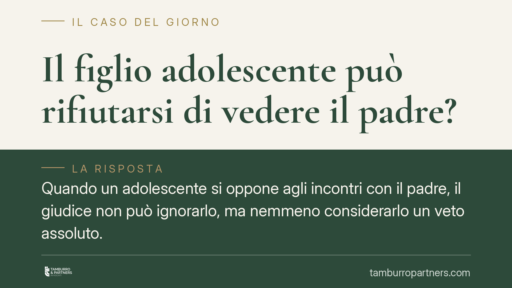

Il figlio adolescente può rifiutarsi di vedere il padre?
Quando un adolescente si oppone agli incontri con il padre, il giudice non può ignorarlo, ma nemmeno considerarlo un veto assoluto. La legge impone di ascoltare il minore e di valutare la genuinità del suo rifiuto, distinguendo la volontà spontanea dai condizionamenti. Vediamo cosa prevede il diritto di famiglia e come muoversi in concreto.

Il quadro della questione
La scena è frequente nelle separazioni conflittuali: un figlio di quattordici o quindici anni dichiara di non voler più incontrare il padre (o la madre). Il genitore convivente lo riferisce come volontà da rispettare; l'altro genitore denuncia un condizionamento. Il diritto di famiglia offre criteri precisi per orientarsi, senza affidarsi né all'automatismo del rispetto della volontà del ragazzo né alla sua sistematica svalutazione.
Inquadramento normativo
Il punto di riferimento è l'art. 337-ter del codice civile, che sancisce il diritto del minore a mantenere un rapporto equilibrato e continuativo con entrambi i genitori. Non si tratta solo di un diritto del genitore a frequentare il figlio, ma anzitutto di un diritto del figlio stesso alla bigenitorialità.
L'art. 337-octies cod. civ. impone poi l'ascolto del minore che abbia compiuto dodici anni, e anche di età inferiore se capace di discernimento, prima dell'adozione dei provvedimenti che lo riguardano. L'ascolto è un obbligo processuale: la sua omissione può viziare il provvedimento.
Attenzione, però: ascoltare non significa obbedire. L'opinione dell'adolescente è un elemento che il giudice valuta, ma la decisione resta ancorata al principio cardine dell'interesse superiore del minore. La volontà del ragazzo pesa in proporzione alla sua maturità e, soprattutto, alla genuinità di quella volontà.
Le implicazioni pratiche
Il nodo che i tribunali affrontano è la spontaneità del rifiuto. Un conto è l'adolescente che, dopo esperienze concrete, matura una posizione autonoma; altro è il minore che riproduce il rancore del genitore convivente. Nel secondo caso si può profilare un fenomeno di condizionamento, che il giudice tende a non assecondare, perché contrario all'interesse del figlio a conservare entrambe le figure genitoriali.
Gli strumenti a disposizione del tribunale sono diversi. Può disporre una consulenza tecnica d'ufficio (CTU), cioè una perizia psicologica affidata a un esperto, per verificare la reale condizione del minore e le dinamiche familiari. Può incaricare i servizi sociali di monitorare e sostenere la ripresa del rapporto. Nei casi più delicati può prevedere incontri protetti, in ambienti neutri con la presenza di operatori.
Quello che il giudice raramente fa è ordinare l'accompagnamento coattivo di un adolescente. Costringere fisicamente un quindicenne a un incontro è spesso controproducente e contrario al suo interesse. La strada preferita è quella del recupero graduale della relazione, non dell'imposizione.
Per il genitore che subisce il rifiuto, questo significa che la partita non è persa: la magistratura tende a preservare il legame, ma occorre dimostrare disponibilità e assenza di comportamenti che giustifichino l'allontanamento. Per il genitore convivente, invece, ostacolare o alimentare il rifiuto può avere conseguenze, fino alla revisione dei provvedimenti di affidamento.
Cosa fare in concreto
- Documentate la situazione. Annotate date, tentativi di contatto e reazioni del minore. In un eventuale giudizio, le prove documentali contano più delle affermazioni generiche.
- Non forzate il contatto fisico. Evitate scenate o pressioni sull'adolescente: rischiano di irrigidire il rifiuto e di essere usate contro di voi.
- Chiedete l'intervento dei servizi o una CTU. Se sospettate un condizionamento, sollecitate al giudice gli strumenti di verifica previsti dall'ordinamento.
- Valutate la mediazione familiare. Un percorso strutturato può ricostruire la comunicazione dove il conflitto giudiziale la aggrava.
- Fatevi assistere per tempo. La ricostruzione del rapporto è più efficace se avviata prima che il rifiuto si consolidi negli anni dell'adolescenza.
In sintesi: la volontà del figlio adolescente conta, ma non decide da sola. Il criterio ultimo resta ciò che serve davvero al minore, e questo va dimostrato con elementi concreti, non con posizioni di principio.
---
*Contributo informativo a cura di Tamburro & Partners - Avv. Giuseppe Tamburro. Non costituisce parere legale.*
Ogni famiglia ha il suo equilibrio.
Separazione, divorzio, affidamento, assegno: se vuoi un confronto riservato su una specifica situazione, scrivi allo studio. Ti rispondiamo entro un giorno lavorativo.